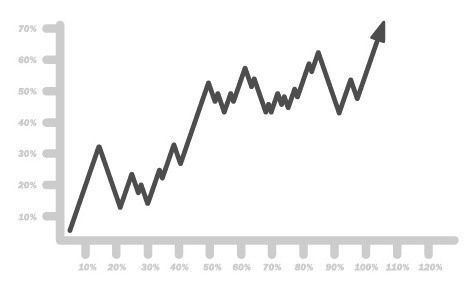

Globally, at least 2.2 billion people have some sort of a vision impairment.
Learn about ARIA
What percentage of companies use ARIA? Let's find out!

Who are we helping by using ARIA in our websites?
Screen readers are today one of the most common assistive technologies used by blind and visually impaired people for navigating and interacting with content. Almost 7.3 million Americans rely on this device for fully accessing the web.
ARIA is an anacronym for “Accessible Rich Internet Applications”. An initiative started in 2006, ARIA is a set of attributes we can add to HTML that allows us to make web content more accessible to users with disabilities who use Assistive Technologies. ARIA allows screen readers to more explicitly describe the intentions of the web page to the user. ARIA attributes allow us to describe the state, properties, and functions of each element on the page. This allows users with visual impairments to better understand the page structure, which elements are interactive controls, how the keyboard will interact with the page, dynamic elements like modals and dropdowns, and much more.
Whats your name?
Thank you for taking the ARIA Demo